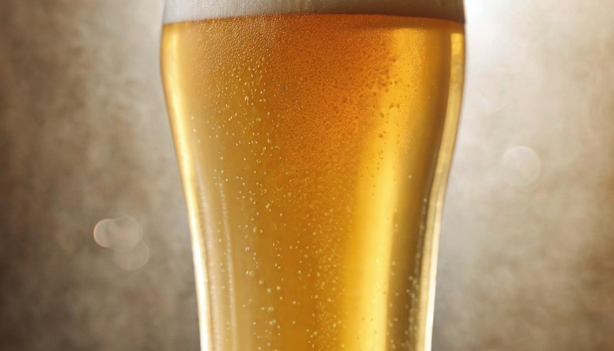
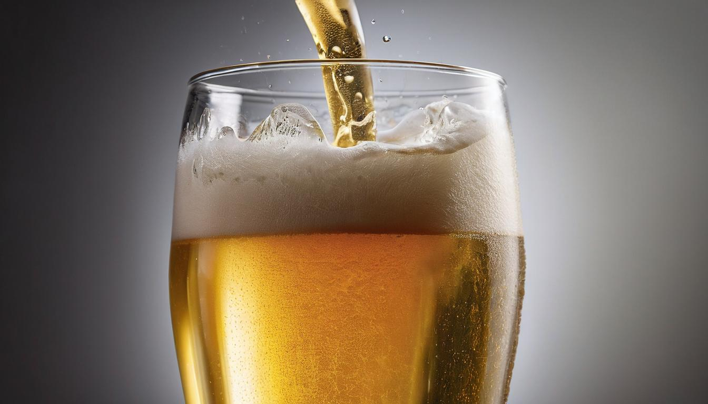
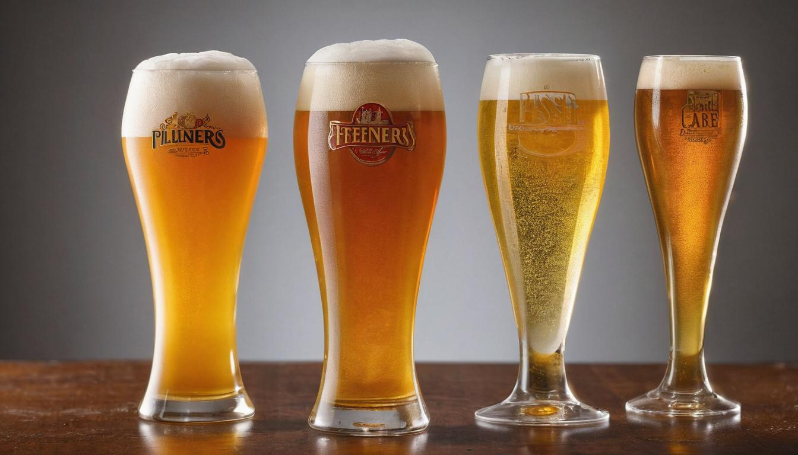

Quality Pilsner beer
Imagine walking down a cobblestoned street in the 1840s town of Plzen, where locals savored every sip of ale despite occasional disappointments from inconsistent quality. In response to these frustrations, a revolution in brewing was quietly underway, about to change not just a town but the world’s beer palate forever. This led to the birth of Pilsner beer—a bright, clear brew that stands out among beer styles even today.
What makes Pilsner so fascinating is more than its refreshing taste; it's the artistry and precision in its brewing process, and its storied journey from a small Bohemian town to becoming a global standard. We’ve dug deep into this riveting tale and examined expert opinions to craft this guide for you. Let’s embark on this journey through history and technique, exploring what sets Pilsner apart right from its first sparkle in those old Bohemian cellars.
Pilsner is a type of lager known for its light golden color, crisp and clean taste, and refreshing qualities. It is typically brewed using pale malts and noble hops, with variations in sweetness and hop bitterness between Czech and German Pilsners. Additionally, it has a significant history, originating in the 19th century in the Czech Republic and playing a crucial role in modern brewing techniques.

The History of Pilsner Beer
Imagine being transported to 19th century Bohemia, a region where dark, inconsistent ales had left the locals yearning for something new. It was against this backdrop of dissatisfaction that a bold move by the local brewers in Plzen (Pilsen) set the stage for an iconic moment in brewing history. In the 1840s, the brewers made the decision to bring in Bavarian brewer Josef Groll to revolutionize their brewing techniques. Groll brought with him the German lagering method and combined it with the exceptional natural resources at their disposal - Saaz hops, soft water, and sandstone caves.
The introduction of the German lagering method marked a pivotal shift in brewing practices. This technique involved cold fermenting and maturing the beer, leading to a cleaner, crisper taste compared to traditional ales. The region's exceptional Saaz hops imparted floral and spicy notes, while the soft water provided ideal conditions for brewing. The utilization of sandstone caves for fermentation also played a crucial role, as the consistent cool temperatures allowed for a slow, steady maturation process.
The culmination of these meticulous brewing processes materialized on October 5, 1842, when the brewers tasted their creation - a light, clear beer that bore no resemblance to the dark ales of their time. This inaugural Pilsner lager captivated their senses with its refreshing taste and pristine clarity. It was an immediate sensation among locals and set into motion a series of events that would shape the future of brewing.
The success of this new beer led to the establishment of Pilsner Urquell, which translates to "the original source of Pilsner." This brewery not only became an epitome of the Pilsner style but also went on to inspire countless iterations around the world. Its legacy endures as one of the most emulated beers in history, paving the way for global recognition and adoration of Pilsner.
From its modest beginnings in Plzen to its widespread popularity today, the journey of Pilsner beer is etched with innovation, perseverance, and an unwavering commitment to crafting exceptional brews.
As we've unveiled the fascinating history behind Pilsner beer, let's now pivot towards exploring another integral aspect - the intricate brewing process behind this beloved beverage.
Brewing Process of Pilsner
Brewing a perfect Pilsner is akin to an art form and demands skill, finesse, and meticulous attention at every stage. Each step — from ingredient selection to malting and mashing, fermentation, and lagering — contributes to the unique taste that defines a classic Pilsner.
Ingredients and Their Significance
The foundation of a Pilsner lies in the meticulous selection of raw materials. A defining characteristic of Pilsners is their use of pale malts, gently kilned to achieve the style's signature golden color and clean taste. The choice of noble hops, such as Saaz, imparts renowned bitterness and aromas. Additionally, lager yeast delivers the light mouthfeel synonymous with a well-crafted Pilsner. Furthermore, the quality of the soft water from Plzen plays a fundamental role in shaping the beer's distinctive character.
The significance of these ingredients cannot be overstated. Pale malts lend a bright hue and delicate sweetness, noble hops impart floral and spicy hints defining the aroma, and lager yeast brings forth a clean fermentation profile. The soft water from Plzen provides an ideal foundation for brewing, resulting in beers that truly speak to their origin.
Malting and Mashing: Crafting the Base
The first critical steps involve transforming raw barley into fermentable sugars that will serve as the backbone of the beer. This process starts with pale malts undergoing gentle kilning to allow rich flavor development while keeping the malt pale. Subsequently, in the mashing process, these malted grains are soaked in hot water where enzymes convert complex starches into simple sugars fit for fermentation.
Given this stage's importance for establishing the initial flavor profile, brewers carefully control temperatures during mashing to extract specific sugar compositions suited for a Pilsner's light body and bright character.
Boiling and Hopping: Infusing Character
Boiling shapes much of a beer's character, especially for Pilsners. Noble hops such as Saaz are introduced during boiling to provide just the right balance of bitterness and aroma without overpowering the brew's subtly sweet malt base.
Balanced hopping levels are crucial, ensuring that bitterness serves as a contrast to sweetness while remaining highly drinkable.
Fermentation and Lagering: Culmination of Craftsmanship
After boiling, lager yeast delicately ferments under cool temperatures. This patient approach imparts refined flavors while maintaining pristine clarity emblematic of high-quality Pilsners. Following primary fermentation, there's an essential second phase – lagering – where beer is stored at cool temperatures for several weeks or months, allowing for maturation and enhancing smoothness and clarity.
Unveiling each step highlights why brewing Pilsner isn’t just an occupation but an exploration in precision, patience, and passion – achieved through exclusive ingredients and laborious processes striving not only for supreme craftsmanship but enduring excellence itself.
Diving deep into the intricate process of crafting Pilsner sets the stage for exploring its defining characteristics in greater detail.
Key Characteristics of Pilsner Beer
When it comes to Pilsner, there are several key characteristics that set it apart from other types of beer. Let's break them down:
Light Golden Color
Pilsners are known for their inviting light golden color, a result of the specific malt used in brewing. The pale malt imparts a beautiful hue that catches the eye and contributes to the overall appeal of the beer. This distinct color makes Pilsner stand out among other brews, creating an aesthetic that signals its refreshing and approachable nature.
Crisp, Clean Taste
One of the hallmarks of Pilsner beer is its refreshingly crisp and clean taste, achieved through a delicate balance of hop bitterness, malt sweetness, and carbonation. The end result is a beer that satisfies with each sip, offering a clean finish that leaves you wanting more.
The clean taste of Pilsner can be attributed to the careful selection of ingredients and brewing techniques. As a lager-style beer, Pilsner undergoes a fermentation process at lower temperatures compared to ales. This slow and cool fermentation helps create a smoother and cleaner flavor profile, devoid of any overpowering yeast-derived flavors or aromas. Furthermore, the use of bottom-fermenting lager yeast contributes to the beer's characteristic crispness by producing fewer fruity esters during fermentation.
Alcohol By Volume (ABV)
Pilsners typically have an alcohol by volume (ABV) ranging from 4% to 5.5%. This moderate level of alcohol content enhances the drinkability of Pilsner, making it an ideal choice for various occasions.
Noble Hops and Aroma
The brewing of Pilsner involves the use of noble hops, such as Saaz, Tettnang, Hallertau, or Spalt varieties. These hops impart a balanced bitterness and contribute to the beer's floral and spicy aroma.
Noble hops are prized for their delicate and pleasant aroma characteristics, which elevate the sensory experience when enjoying a glass of Pilsner. The floral and spicy notes derived from these hops interplay with the malt sweetness to create a harmonious bouquet that entices the senses. This aromatic complexity adds depth to the flavor profile and contributes to the overall allure of Pilsner beer.
Effervescence
Pilsner beers are often characterized by their moderate effervescence, contributing to their refreshing nature without being overly carbonated.
This moderate level of carbonation complements the flavor profile by enhancing the overall drinking experience while providing a refreshing sensation on the palate. It also contributes to the visual appeal by forming an inviting foamy head when poured into a glass.
These key characteristics collectively define what makes Pilsner beer distinctive and cherished among beer enthusiasts globally. From its captivating appearance to its crisp taste and balanced aromatics, Pilsner embodies a delightful combination of elements that contribute to its enduring popularity in the world of brewing.
As we continue our exploration of Pilsner beer, let's now turn our attention toward unraveling the art of savoring its multifaceted flavors in our next section.
How to Taste Pilsner

Tasting a Pilsner beer isn't just about drinking it; it's about experiencing its unique flavors and aromas in a way that elevates your appreciation for this classic style.
Step 1: Pouring the Beer
To begin your tasting journey, pour the beer into a clean, clear glass. The appearance of the beer can tell you a lot about what to expect. A genuine Pilsner should exhibit a clear, golden color with a frothy white head. An inviting appearance sets the stage for an enjoyable tasting experience.
Interestingly, the color and clarity of a Pilsner can provide insights into its quality and brewing process. A bright, clear appearance often indicates the use of high-quality ingredients and precise brewing techniques.
Step 2: Aromas and Swirling
Once poured, gently swirl the glass to release the beer's aromatic compounds. Bring the glass to your nose and take a sniff. When doing so, you should expect to detect floral and spicy notes from the noble hops, along with a subtle malt sweetness.
The aromas of a Pilsner are often characterized by the use of Noble hops, such as Saaz, which impart distinct floral, herbal, and sometimes spicy notes to the beer. These aromas create layers of complexity that contribute to the overall enjoyment of tasting a Pilsner.
Step 3: Tasting the Flavor
Take your first sip and let the beer coat your palate. Pay attention to the balance between hop bitterness and malt sweetness. Additionally, be on the lookout for any herbal or spicy undertones that further enhance the complexity of the flavor profile.
Imagine sipping on a well-crafted Pilsner and experiencing a delightful interplay between crisp bitterness and smooth malt sweetness with hints of herbal or spicy nuances that linger on your palate.
Step 4: Assessing Mouthfeel
After tasting the flavor, consider the mouthfeel of the beer. A Pilsner typically offers a light to medium body with smooth, effervescent carbonation. The mouthfeel should feel refreshing and complement the overall flavor profile, enhancing your drinking experience.
Think of it as if you were sampling a delicate dessert - each sip should offer a balanced combination of flavor and texture that leaves you wanting more.
Step 5: Noting the Finish
As you swallow or spit (if you're tasting multiple beers), observe the aftertaste or finish of the beer. A well-crafted Pilsner often leaves behind a clean and slightly bitter aftertaste that invites another sip. This lingering finish is a hallmark of a finely-made Pilsner.
Tasting Pilsner isn't just an act; it's an exploration of flavors, aromas, and textures that come together to create a memorable sensory experience. By paying attention to each step along the way—pouring, swirling, sipping, assessing mouthfeel, and noting the finish—you can truly savor the intricacies of this beloved style of beer.
Now that we've mastered the art of tasting Pilsner and appreciating its finer points, let's dive into exploring its diverse variations in "Types of Pilsner Beers.
Types of Pilsner Beers

Pilsner has made a name for itself as a diverse and multifaceted category in the world of brewing. Let's take a closer look at three prominent variations: Czech Pilsners, German Pilsners, and American Pilsners. Each type brings its own distinct qualities to the table, offering beer enthusiasts an array of flavors to explore and savor.
Czech Pilsners
Czech Pilsners are renowned for their slightly sweeter malt profile and pronounced hop bitterness, creating a unique balance that sets them apart. The historic Pilsner Urquell stands as the quintessential example of this style, showcasing the classic traits of Czech Pilsners. The combination of sweet maltiness with a refreshing hop bite is a trademark feature that defines Czech Pilsners, making them a favorite among those who appreciate a well-rounded taste experience.
This style harks back to the birthplace of Pilsner beer in Plzen, Czech Republic, where it all began with the creation of a light, clear, and remarkably refreshing brew.
German Pilsners
On the other side of the spectrum, German Pilsners exhibit a more balanced character between malt and hops. These brews often lean towards a drier profile compared to their Czech counterparts, offering a crisp and assertive flavor profile that appeals to many. Popular examples such as Jever and Bitburger capture the essence of German Pilsners, embodying a harmonious interplay between malt sweetness and hoppy bitterness that culminates in a satisfying drinking experience.
The distinctive character of German Pilsners reflects the country's rich brewing heritage and commitment to producing beers of unparalleled quality. The meticulous attention to detail in crafting these brews has solidified their position as staples in the global beer scene.
American Pilsners
Across the Atlantic, American brewers have embraced the Pilsner tradition by adapting it to suit evolving tastes and preferences. American Pilsners introduce innovative elements, sometimes incorporating adjuncts like rice or corn into the brewing process. This results in a lighter body and flavor compared to traditional European renditions. Examples such as Miller Lite and Budweiser exemplify this Americanized approach to brewing Pilsner-style beers.
By incorporating these adjuncts into their recipes, American brewers have broadened the appeal of Pilsner beers, catering to a wide audience with varying preferences for beer characteristics.
From the historic roots of Czech Pilsners to the balanced nature of German iterations and the innovative adaptations in American renditions, the world of Pilsner beers offers an expansive array of flavors and styles for enthusiasts to explore. Each type brings its own distinct qualities to the table, offering beer connoisseurs an exhilarating journey through the diverse landscape of this beloved beer style.
Popular Pilsners You Should Try
Pilsners come in a wide variety of flavors and styles, each with its own unique characteristics that cater to different preferences. Whether you lean towards a more pronounced hop bitterness or prefer a balanced blend of malt sweetness and bitter notes, there is a pilsner out there for you. Let's take a look at some popular pilsners that have garnered praise from beer enthusiasts around the world.
Pilsner Urquell
When it comes to historical significance, Pilsner Urquell stands as an iconic and revered figure in the world of pilsners. Originating from the Czech Republic, this classic pilsner offers a perfect balance between malt sweetness and hop bitterness. From the moment the golden liquid touches your lips, you are greeted with a harmonious fusion of flavors that sets the standard for the pilsner style.
Stella Artois
Venturing into Belgian territory, Stella Artois entices with its crisp and refreshing taste, accented by a subtle hint of bitterness. The distinctive flavor profile creates an inviting drinking experience, making it a go-to selection for those seeking a gratifyingly smooth and subtly bitter pilsner.
Jever
For those with an affinity for bold, pronounced hop bitterness, Jever offers a compelling choice. This German-brewed pilsner presents a noticeably bitter profile that appeals to individuals who appreciate the assertive nature of hops in their beer. It's an excellent selection for aficionados of traditional German pilsners seeking a more intense hop character.
Budweiser Budvar
Another Czech offering, Budweiser Budvar brings forth a meticulously balanced taste, incorporating a hint of malt sweetness alongside delicate herbal hop notes. Its nuanced flavor composition captivates the palate, demonstrating the finesse and artistry embodied in Czech brewing traditions.
Trumer Pils
Hailing from Austria, Trumer Pils has earned acclaim for its exemplary crispness and captivating floral hop aroma. This Austrian gem showcases a delightful combination of refreshing attributes and alluring fragrant notes, delivering an invigorating experience cherished by discerning beer enthusiasts.
Victory Prima Pils
Bringing an American twist to the classic pilsner style, Victory Prima Pils successfully infuses the rich heritage of German brewing traditions with an enticingly hoppy character. Tantalizingly refreshing with a nuanced touch of bitterness, this American pilsner reinvigorates the palate with its innovative take on the traditional style.
With these popular selections, you have a diverse array of pilsners to explore, each offering its own distinctive qualities to augment your beer-tasting journey. Whether you're drawn to the rich historical roots of Pilsner Urquell or yearn for the innovative twist embodied in Victory Prima Pils, these pilsners provide an avenue for discovery and appreciation of the intricate world of brewed perfection.
Embark on your pilsner exploration journey with confidence and curiosity, and savor the delightfully diverse world of flavors that await you.